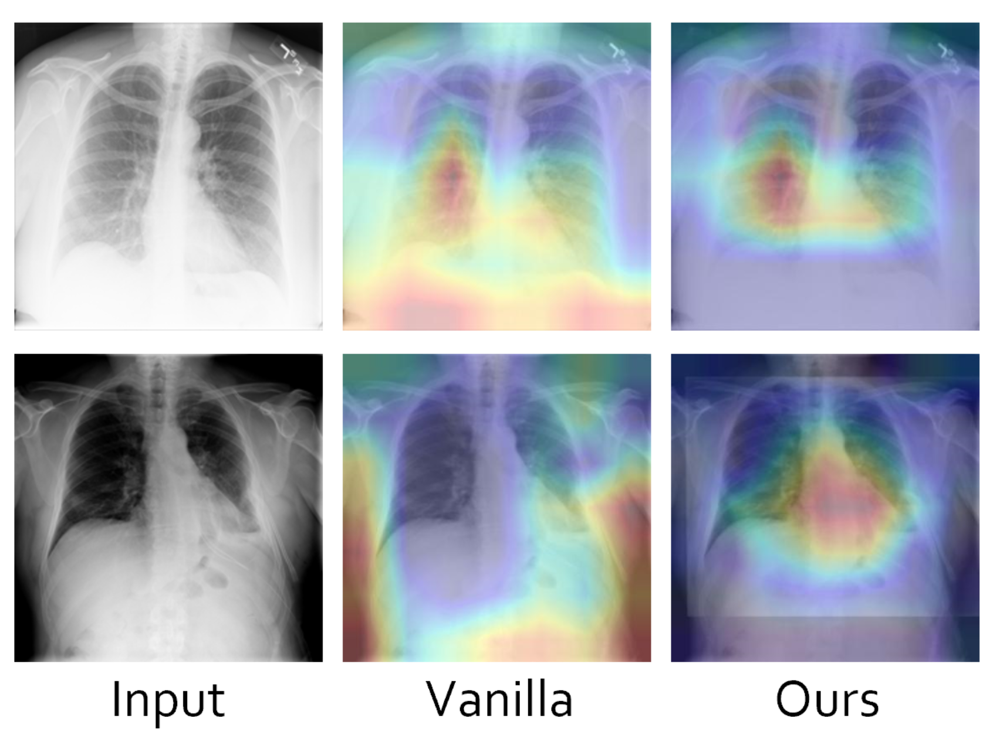

Dunyuan XUPhD
Rm 403, Academic Building NO.1 

|
 |
Biography
I am currently a first-year PhD student at Computer Science and Engineering, The Chinese University of Hong Kong, supervised by Prof. HENG Pheng-Ann and Dr. Xi Wang. My research interest lies at the interdisciplinary field of Deep Learning and Medical Image Analysis.
Previously, I have received my M.Sc. degree in Computer Science and Engineering from The Chinese University of Hong Kong in 2022. I have received my B.Eng. degree in Computer Science from The Hong Kong Polytechnic University in 2021.
News
- [08/2023] Join the CUHK CSE department, start my PhD study!
Selected Publications [Google Scholar]
|  | Pseudo Bias-Balanced Learning for Debiased Chest X-ray Classification Luyang Luo, Dunyuan Xu, Hao Chen, Tien-Tsin Wong, Pheng-Ann Heng International Conference on Medical Image Computing and Computer-Assisted Intervention (MICCAI), 2022. |

|
Abnormal Traffic Detection: Traffic Feature Extraction and DAE-GAN With Efficient Data Augmentation. Zecheng Li, Shengyuan Chen, Hongshu Dai, Dunyuan Xu, Cheng-Kang Chu, Bin Xiao IEEE Transactions on Reliability, 2022. [paper] |
© Dunyuan XU | Last updated: Sept. 2023